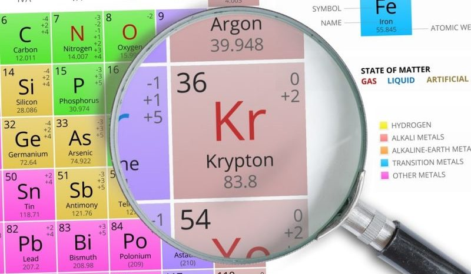
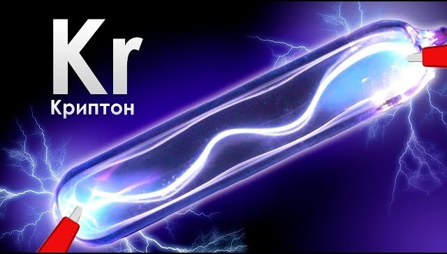

Криптон
Крипто́н (химический символ — Kr, от лат. Krypton) — химический элемент 18-й группы (по устаревшей классификации — главной подгруппы восьмой группы, VIIIA), четвёртого периода периодической системы химических элементов Д. И. Менделеева, с атомным номером 36.Простое вещество криптон — тяжёлый инертный одноатомный газ без цвета, вкуса и запаха.

В 1898 году Уильям Рамзай совместно со своим ассистентом Морисом Уильямом Траверсом выделил из жидкого воздуха, предварительно удалив кислород, азот и аргон, смесь, в которой спектральным методом были открыты два газа: криптон (от др.-греч. κρυπτός — «скрытый», «секретный») и ксенон («чуждый», «необычный»)
На Земле криптон присутствует главным образом в атмосфере (1,14·10–4 % по объёму). При делении природных изотопов урана 235U и 238U, а также при ядерных взрывах образуются радиоизотопы криптона, например 85Kr (период полураспада T1/2 10,76 года, β-излучатель). Криптон открыт в 1898 г. У. Рамзаем и английским химиком М. Траверсом при спектроскопическом изучении наименее летучих фракций сжиженного воздуха. Название «криптон» происходит от греч. κρυπτός – скрытый, что связано с трудностью выделения криптона из воздуха.
Специальные аппараты наполняют жидким кислородом. Полученный концентрат отделяют от примесей углеводородов. Затем, при помощи перевода концентрата из газообразного в жидкое состояние и наоборот, получают очищенную от примесей смесь криптона и ксенона. На последнем этапе разделяют газы при помощи активированного угля. Полученный остаток содержит 97% криптона.

Качественно криптон обнаруживают с помощью эмиссионной спектроскопии (характеристические линии 557,03 нм и 431,96 нм). Количественно его определяют масс-спектрометрически, хроматографически, а также методами абсорбционного анализа